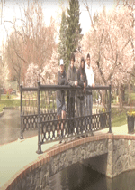

Jeremiah Anderson's Video Project |
||
| Home Photo Project Video Project Print Project Info Project | ||
|
 Full Video here Group Video |
The purpose of this assignment is to produce a video that highlights one of the most notable aspects of the Millersville University campus, such as its academic offerings, student body, state-of-the-art facilities, picturesque setting, or community service. This project enables students to highlight the distinctive and alluring features of the selected campus feature using their creativity, storytelling skills, and technical video production talents. Planning, filming, and editing will show students how to create a gripping story, use eye-catching images and sound, and customize their message for a specific audience. |
|
|
©: 2025 Jeremiah Anderson | ||